Overview
Homework 4
Cloth Simulation
We implemented a cloth simulator that connects a grid of point masses with structural, shearing, and bending springs. Hooke’s law and damped Verlet integration update the cloth, a strain limiter controls stretching, and collision responses handle spheres, planes, and nearby cloth particles. GLSL shaders then turn the same mesh into diffuse, textured, bumpy, displaced, or reflective surfaces.
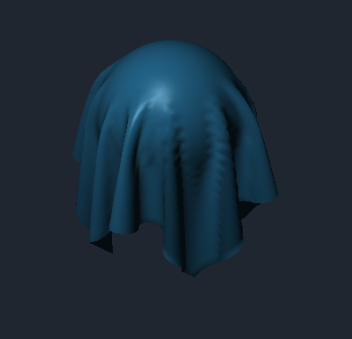
The experiments show how much the visible material depends on the interaction between forces and geometric constraints. Increasing stiffness and reducing density can produce the same spring acceleration, but changing damping mainly changes the path and time to equilibrium. In rendering, a detailed normal field can change highlights without changing a silhouette, while displacement needs enough vertices to represent the height field.
Experiment protocol
Unless a caption says otherwise: 50 × 50 masses, 1 × 1 cloth, thickness 0.0095, ks = 5000, density = 150, damping = 0.2, gravity = (0, −9.8, 0), 90 simulated frames/s, and 30 substeps/frame. Damping is entered as a percentage. Each parameter test starts from a fresh scene; camera, light, and all other parameters stay fixed within a comparison. Times are simulated times, not rendering durations.
Images are OpenGL framebuffer captures from the current implementation, with UI omitted and unused background cropped. No generative images are used. Scene settings and capture parameters are recorded in the experiment manifest.
Part 1: Masses and springs
We place point masses in row-major order, using x = width · i/(nw − 1) and the analogous second grid coordinate. Horizontal cloth starts at y = 1; vertical cloth lies near the xy-plane with a small deterministic z jitter to break symmetry. Pinned grid coordinates are marked during construction and excluded from integration and collision movement.
| Spring family | Connections | Role | 50 × 50 count |
|---|---|---|---|
| Structural | Immediate horizontal/vertical neighbors | Resist axial stretching | 4900 |
| Shearing | Both diagonals of every grid cell | Resist diagonal distortion | 4802 |
| Bending | Horizontal/vertical neighbors two samples apart | Resist sharp local folds | 4800 |
Each connection is created once and stores its initial endpoint distance as its rest length. The 2500 masses therefore support 14,502 springs. Bending springs use 0.2 times the main stiffness during simulation.
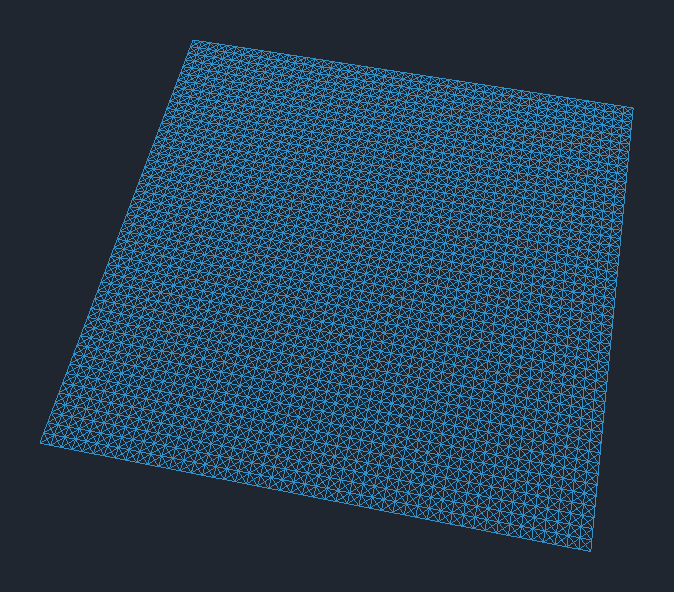
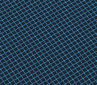
Without shearing, the wireframe is an axis-aligned grid. Bending edges overlap the structural directions in this undeformed view because they span two grid intervals. With only shearing, the diagonals form crossing X shapes. Enabling every family superimposes the grid and diagonals, making the connectivity much denser. These are paused initial-state views so the changes isolate the spring structure.
Construction checks
Row-major indexing makes each neighbor offset explicit. Boundary conditions prevent connections from wrapping to the next row, and the point-mass array is fully populated before spring endpoint pointers are created. The rendered triangle mesh has two triangles per grid cell, independently of which spring families are displayed.
Part 2: Numerical integration and stiffness
For a mass m = width · height · density/(nwnh), external force is m times the total external acceleration. A spring with endpoint separation d applies equal and opposite forces along its direction:
After summing forces, we use the current and previous positions for damped Verlet integration. Here Δt = 1/(90 · 30) and D = damping/100:
Self-collisions and object collisions are resolved next. Finally, a single strain-limiting pass corrects any spring longer than 1.1 times its rest length. Two free endpoints share the correction; a free endpoint paired with a pinned endpoint takes the full correction. Since subsequent corrections can affect earlier springs, this is a local one-pass limit rather than a global exact constraint solve.
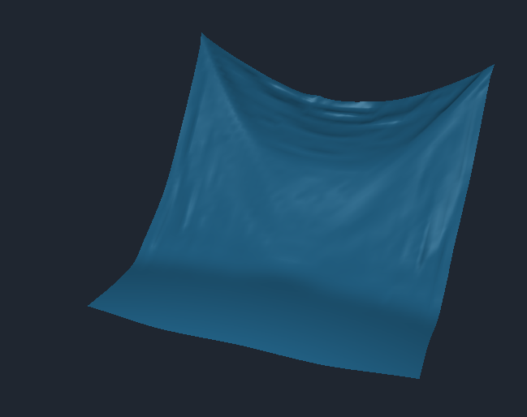
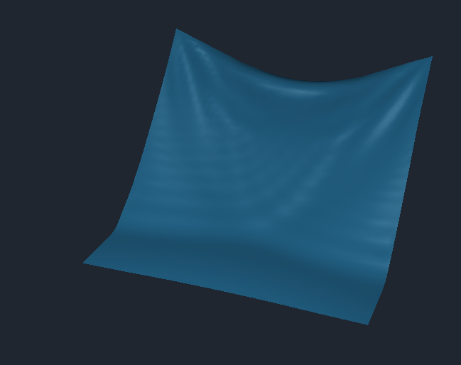
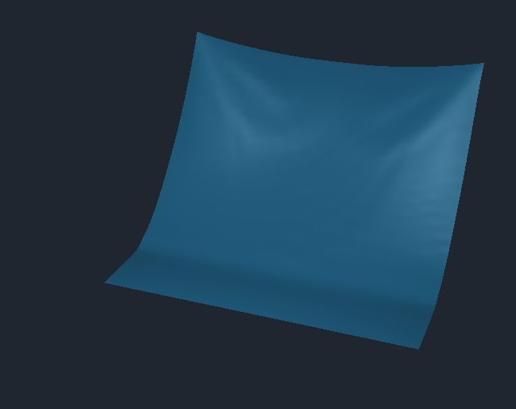
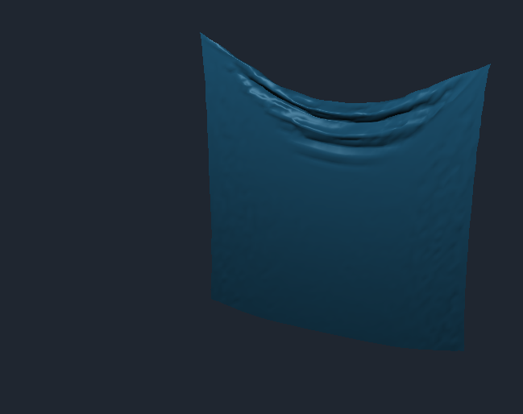

All three cloths initially swing down from the horizontal starting sheet. Low stiffness allows greater deformation and produces small, irregular wrinkles around the upper hanging folds. At 10 s it remains locally jittery. The default cloth settles into a smooth hanging shape, while high stiffness leaves a shallower upper sag and a higher bottom edge. The strain limiter prevents the very soft cloth from stretching as much as an unconstrained spring system would.
Part 2: Density and damping
Density: 15, 150, and 1500

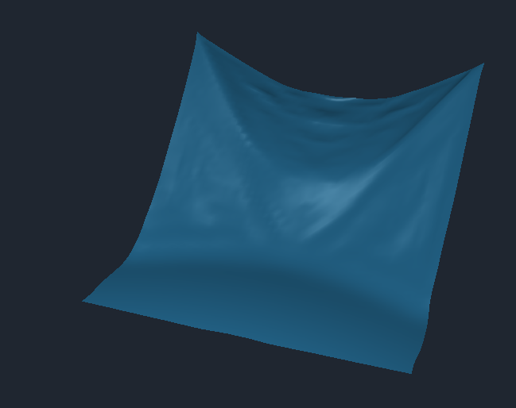
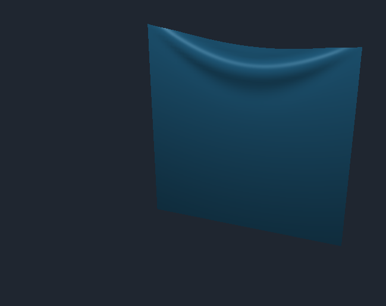
With ks fixed, increasing density increases each particle’s mass and reduces spring acceleration Fs/m. The heavier cloth sags farther and retains more fine-scale motion; the light cloth is tauter and settles with a higher lower edge. Gravity alone does not accelerate the heavier cloth faster: its gravitational force and mass increase together. The difference appears through the springs, constraints, and subsequent motion.
A useful consistency check is that density = 15 at ks = 5000 and density = 150 at ks = 50,000 give the same ks/density. Their measured mean heights at 10 s are both 0.478362, and the images match closely.
Damping: 0, 0.2, and 2
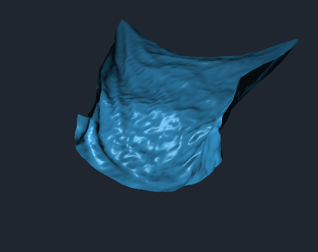
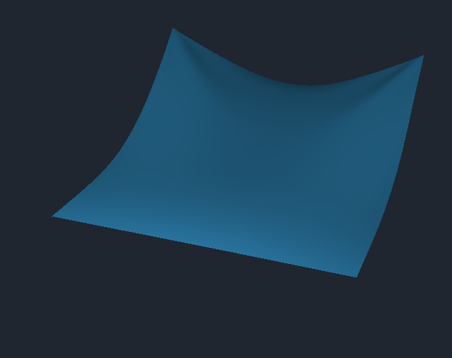
Without damping, the cloth keeps swinging and develops traveling wrinkles; at 10 s it is still visibly disturbed. Default damping removes this motion and reaches a stable hanging shape. Damping = 2 suppresses oscillations but also makes the initial descent much slower: at 2 s the cloth is still far from the default hanging state. By 10 s it has approached that shape but is still creeping downward. A more heavily damped cloth therefore need not reach equilibrium sooner.
Damping scales the displacement carried over from the preceding substep. Applying 2% at every substep is substantial because there are 2700 substeps per simulated second. It primarily changes transient behavior rather than the intended static force balance.
Part 2: Resting cloth and measured results
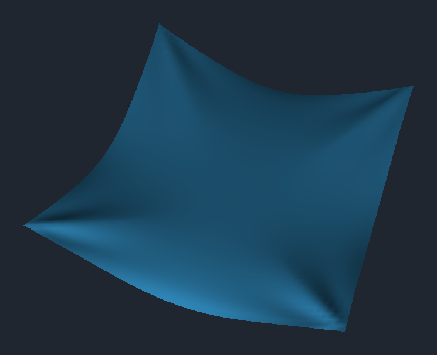
The four fixed corners hold the boundary at y = 1 while gravity pulls the interior down into a suspended basin. The center region sits below the corners and the surface is smooth, with curved transitions toward the supports. At 15 s the mean height is 0.817380 and the minimum height is 0.735612. The stored Verlet velocity estimate is negligible, consistent with the resting appearance.
Two-corner hanging tests at t = 10 s
| Changed parameter | Mean y | Minimum y | RMS velocity estimate |
|---|---|---|---|
| Default | 0.429519 | -0.082921 | 1.25e-11 |
| k_s = 50 | 0.403151 | -0.149712 | 0.163 |
| k_s = 50,000 | 0.478362 | -0.021690 | 1.12e-11 |
| density = 15 | 0.478362 | -0.021690 | 1.12e-11 |
| density = 1500 | 0.404480 | -0.142941 | 0.0305 |
| damping = 0 | 0.429837 | -0.090955 | 1.76 |
| damping = 2 | 0.438728 | -0.061587 | 0.027 |
The velocity estimate is (x − xprevious)/Δt after all corrections, averaged in RMS over all masses. It is an internal Verlet diagnostic rather than an independently measured continuous velocity. Positions are in scene units; all other settings match the protocol on page 1.
The table supports the visual comparisons: low stiffness and high density both lower the cloth, while high stiffness and low density produce identical height statistics. Zero damping has a large residual motion estimate. The high-damping case is higher than default because it has not finished approaching equilibrium at the sampled time.
Part 3: Collisions with spheres and planes
Collision response
For a sphere, we test whether the current particle position is inside its radius. If so, we project radially to the sphere surface, form the correction from the previous position to that surface point, and apply the fraction 1 − friction. A particle exactly at the sphere center uses its previous radial direction, or an upward fallback, to avoid division by zero.
For a plane, the signs of dot(xprevious − p, n) and dot(x − p, n) identify a crossing. We project the current position to the plane, add a 0.0001 offset toward its previous side, and again scale the correction from the previous position by 1 − friction. These are positional responses; friction scales the complete correction in this implementation.
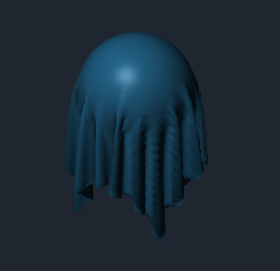
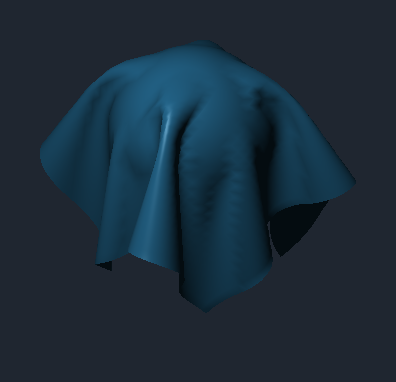
The soft cloth hugs the sphere and hangs in narrower, longer folds with small residual ripples. The default case has broader hanging lobes. The stiff cloth bridges outward more and resists wrapping into tight folds, leaving wider flared sections and a higher lower edge. Minimum y is −0.268512, −0.232589, and −0.198894 respectively in these late configurations. The soft case is near rest but retains slight local motion.
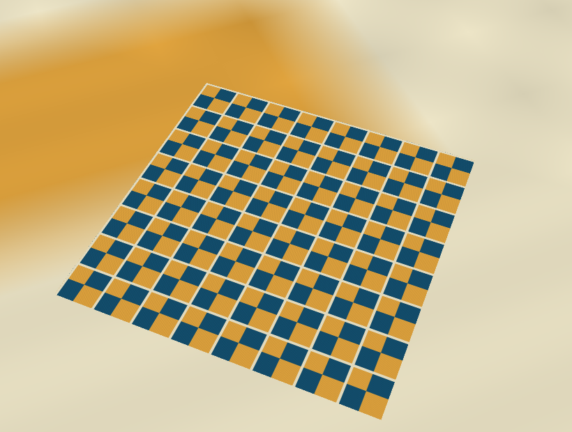
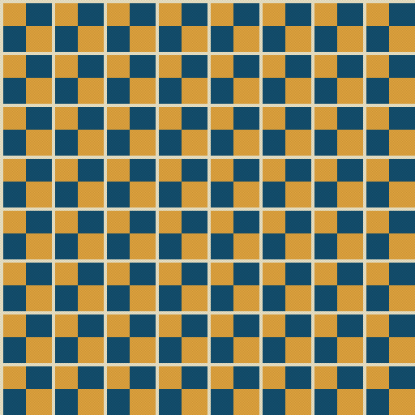
On the plane, the horizontal cloth lands flat without passing through the surface. Its height in the 5 s capture is approximately 0.000537, just above the collision plane; small contact corrections continue around the protective offset. The repeated texture makes it easy to see that the sheet remains spread out. The sphere drawing uses 0.92 times the collision radius in the supplied renderer, so its visible surface has a small intentional clearance from the collision surface.
Part 4: Self-collisions over time
Each substep rebuilds a spatial hash of the particle positions. The cell sizes are w = 3 · width/nw, h = 3 · height/nh, and z size = max(w, h). Floor division handles negative positions consistently. The three integer cell coordinates are mixed into a 24-bit key, stored as an exactly representable float.
For a particle, we inspect candidates in its hash bucket, skip itself, and check whether their separation is between zero and twice the cloth thickness. Each close pair contributes an outward correction of (2 · thickness − distance) along the separation direction. We average the corrections and divide by the number of simulation substeps before moving an unpinned particle.
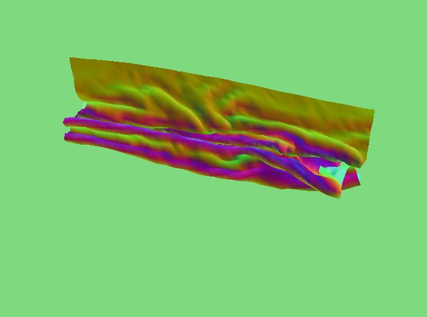
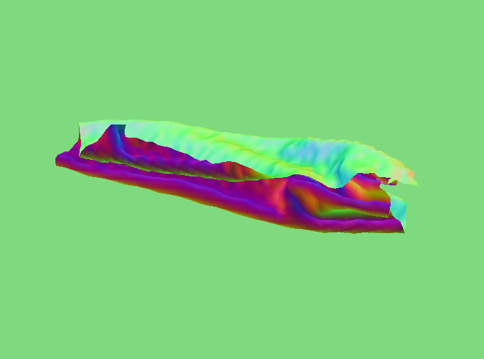
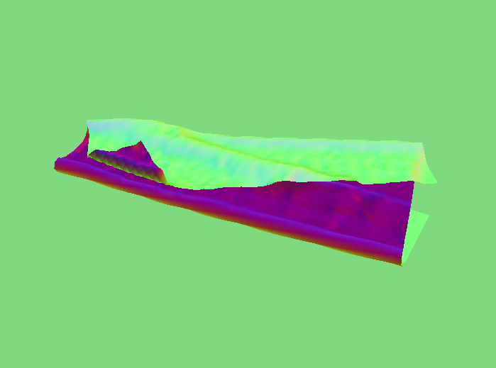
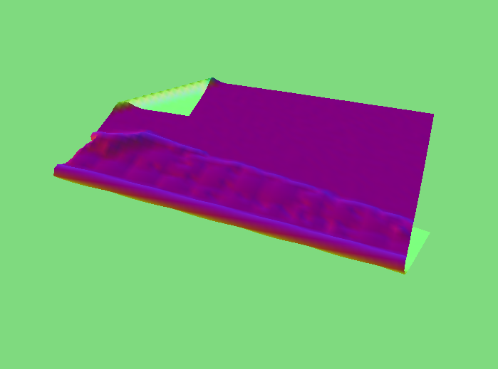
These captures use selfCollision.json with default parameters. The normal-visualization shader maps surface orientation to color, making folds visible on both sides of the originally vertical sheet. Geometry, collision handling, and simulation settings are unchanged. The early frames show the transition from a standing sheet to a folded stack; the late frame shows the cloth resting close to the ground instead of collapsing into a single coincident layer.
The hash avoids testing every particle against every other particle. Its cost depends on bucket occupancy, so a dense folded region can still be expensive. This implementation checks the same hashed bucket only; adjacent-cell contacts and full triangle intersections are not exhaustively handled. Accordingly, it is a practical particle-level approximation rather than a guarantee of an intersection-free cloth surface.
Part 4: Stiffness and density in a folded cloth
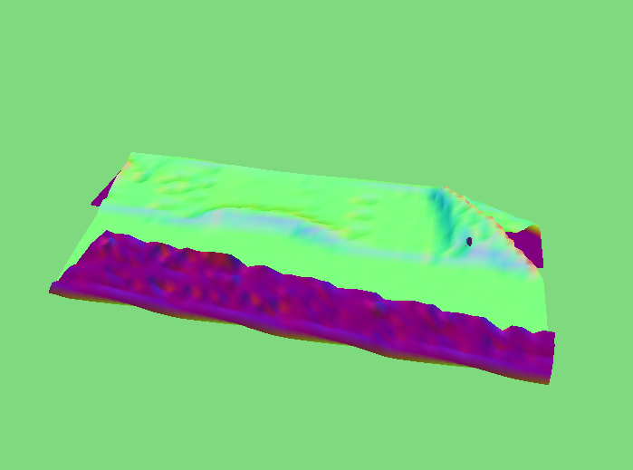
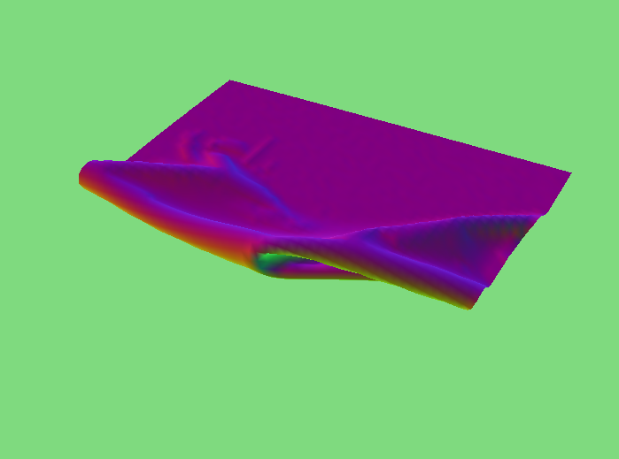
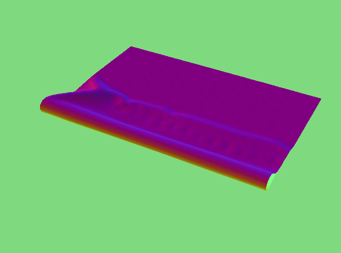
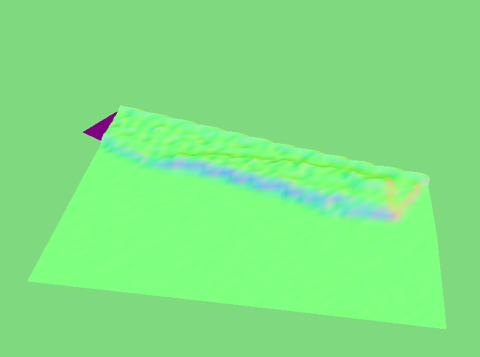
Changing stiffness
Low stiffness permits tighter local deformation and leaves a flatter, more irregular stack, with smaller creases and continuing local agitation. High stiffness resists sharp folding, so broader sections remain bent above the ground. At 15 s, maximum y is 0.061208 for ks = 500 and 0.104084 for ks = 50,000, compared with 0.041297 for the default. A single height statistic is not monotonic across all folding patterns: the contact history determines which lobes remain raised.
Changing density
The light cloth has stronger spring response relative to its inertia and retains more elevated folds. The heavy cloth settles into a more compact pile. At 15 s, maximum y is 0.064922 for density = 15 and 0.047304 for density = 1500. Mean y is 0.010631 and 0.007100 respectively. The screenshots show the shape differences, rather than implying that the material always folds into a predictable number of layers.
During the initial fall, gravity gives particles the same acceleration regardless of density; the early sheets therefore look similar. Differences become more visible when the lower edge hits the plane and spring forces compete with contact corrections. All four cases keep damping = 0.2, the same seed for the initial jitter, the same camera, and the same time step. These are late-time configurations; some local bouncing remains.
Part 5: Shader pipeline and Blinn-Phong lighting
A shader is a small GPU program that processes geometry or computes surface appearance. The vertex shader transforms each mesh vertex into clip space and passes values such as world position, normal, tangent, and UV coordinates to the next stage. Rasterization interpolates those values across triangles. The fragment shader uses them to calculate a color for each covered fragment; depth testing then determines which visible surface contributes to the image.
Blinn-Phong combines a constant ambient term, Lambertian diffuse reflection, and a view-dependent specular highlight. The diffuse term is strongest when the normal points toward the light. The specular term uses the halfway vector h between the normalized light direction l and view direction v. A large exponent makes the highlight narrow:
+ 0.35 (I/r²) max(n · h, 0)64
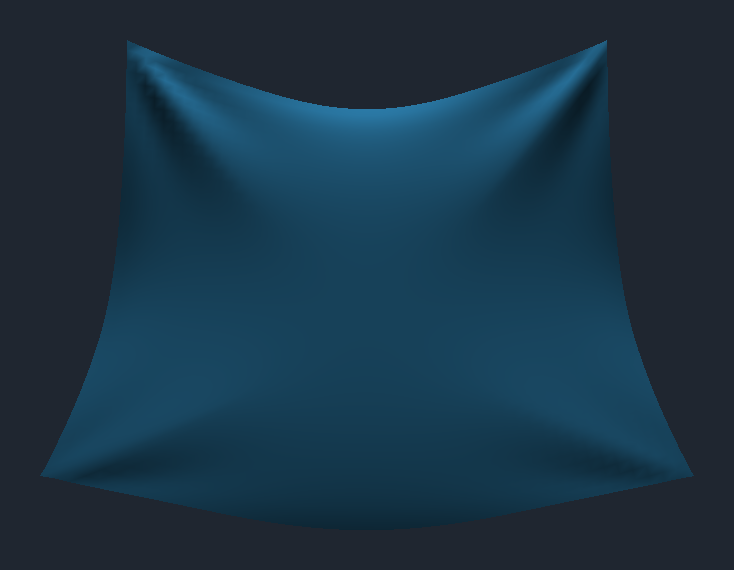
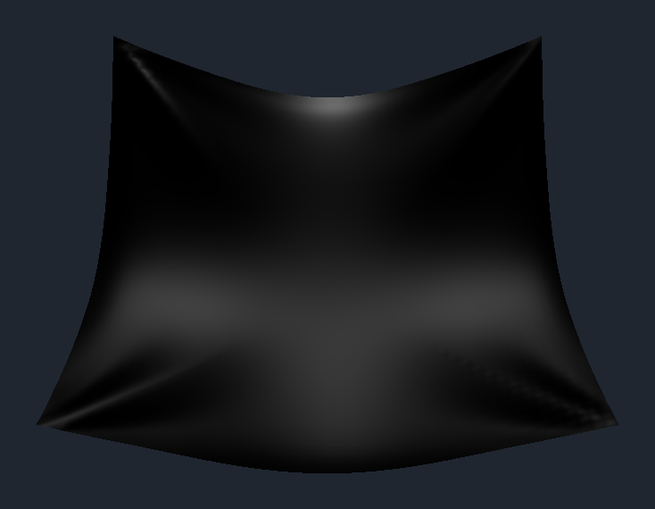
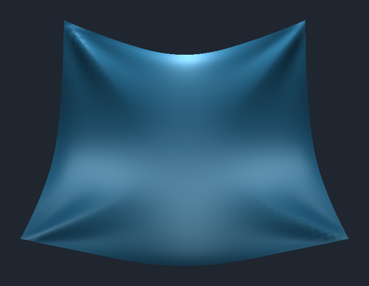
These four renders share the same pinned4.json state at t = 10 s, camera, color, and point light. Diagnostic copies of Phong.frag output one existing term at a time; the original full shader is unchanged. We choose a view above the opposite side of the sheet so the specular reflection is visible. The ambient image is deliberately dark because the coefficient is 0.08. Light position is (0.5, 2, 2), intensity is (3, 3, 3), and the material color is (0.20, 0.57, 0.78).
Part 5: Texture mapping and bump mapping
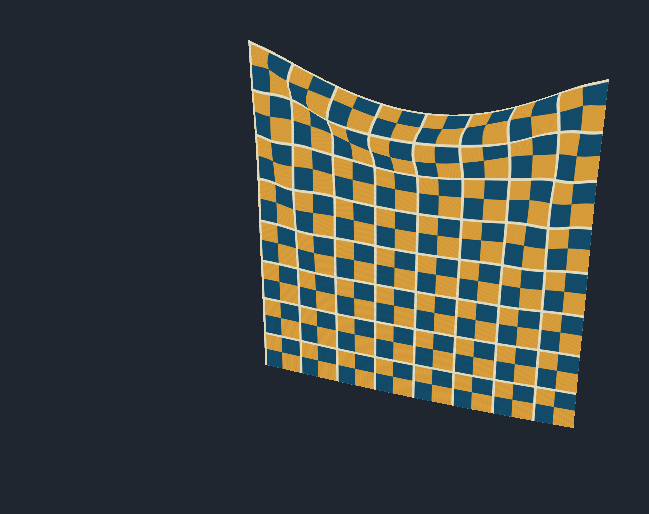
We created a procedural textile texture from alternating blue and gold checks, pale crossing threads, and a small alternating pixel-scale weave. It is loaded in the texture_1 slot in the capture copy of the project’s textures directory. The texture shader samples the image at the interpolated UV coordinates. The grid follows the cloth’s curved hanging shape; the color pattern changes, while the simulated positions remain the same.
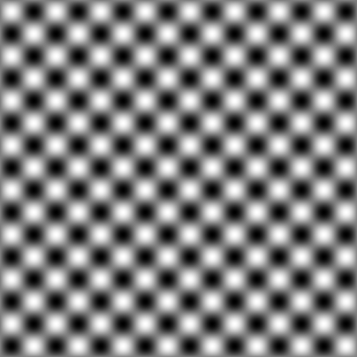
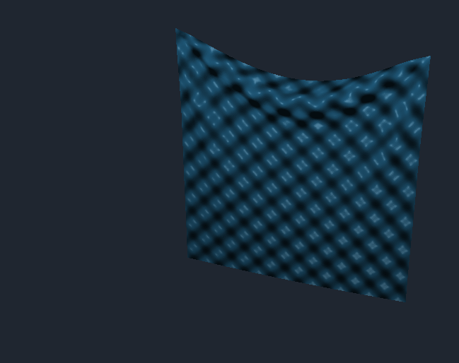
For bump mapping, we sample height differences one texel apart in u and v, multiply them by the height and normal scales, and build the local perturbed normal (−dU, −dV, 1). A tangent-bitangent-normal basis transforms it into world space for Blinn-Phong shading. Orthogonalizing the tangent against the normal helps keep this basis consistent.
The sinusoidal height field is our own non-default texture, saved as custom-height.png and substituted into the texture_2 sampler slot for every bump/displacement comparison. Its red channel supplies the height. We use a normal scale of 200 to make the one-texel finite differences visible at report size; the height scale remains 0.1. Bump mapping adds small lighting variations while preserving the cloth’s outer silhouette and mesh positions.
Part 5: Bump versus displacement and mesh resolution
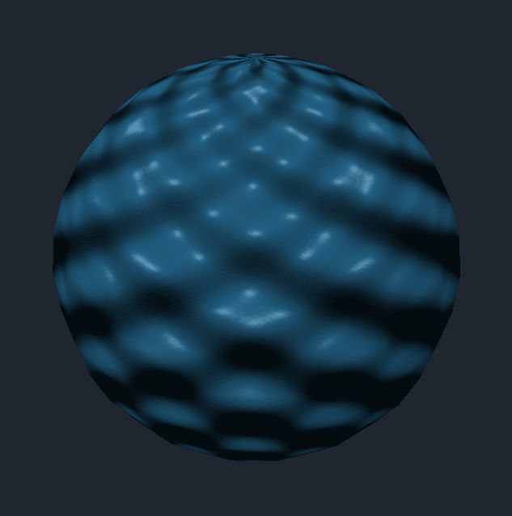
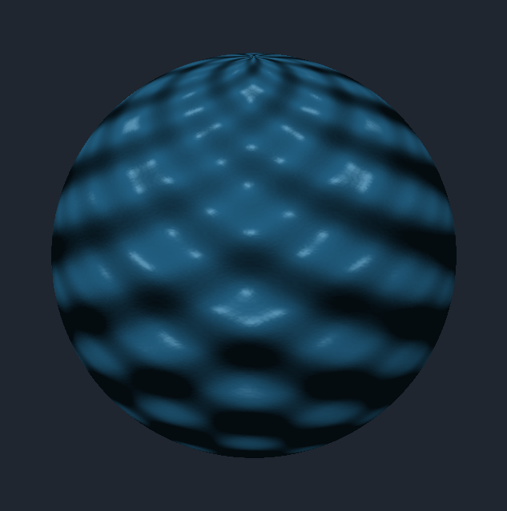
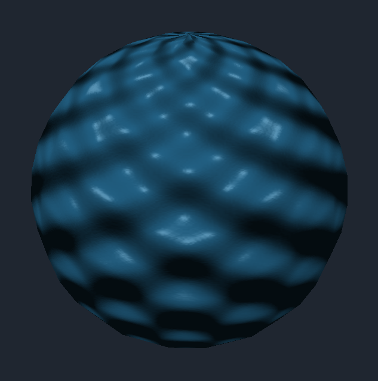
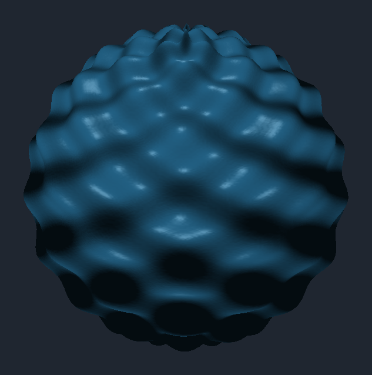
All four images use the same custom sinusoidal height map, light, camera, color, height scale 0.1, and normal scale 200. The sphere-only views hide the cloth for a clear silhouette comparison. The 16 × 16 and 128 × 128 meshes correspond to the program’s −o 16 −a 16 and −o 128 −a 128 settings. The sphere is not simulated or deformed by cloth forces in this comparison.
Bump mapping changes only the normal used by the fragment shader. Both sphere meshes therefore show surface lighting detail, but their silhouettes remain approximately spherical; the coarse sphere retains its polygonal outline. Higher tessellation smooths that outline without being necessary to sample height in every visible fragment.
Displacement mapping samples height in the vertex shader and moves each vertex along its input normal before projection. The dense sphere has enough vertices to reveal a visibly rippled outline. The coarse sphere cannot resolve the same field: an eight-cycle sine sampled at roughly sixteen intervals lands near alternating zero crossings, so many samples lie near the midpoint height and the geometric relief largely disappears. This is a sampling limitation, not a change of texture between the renders.
The displacement fragment shader also applies the same bumped normal used by the bump shader. Thus the dense displaced sphere combines a changed silhouette with fine lighting detail. It does not recompute normals from the displaced mesh, so the shading is still an approximation to the displaced geometry.
Part 5: Mirror reflection and conclusions
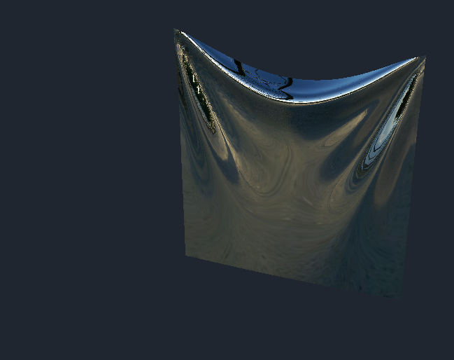
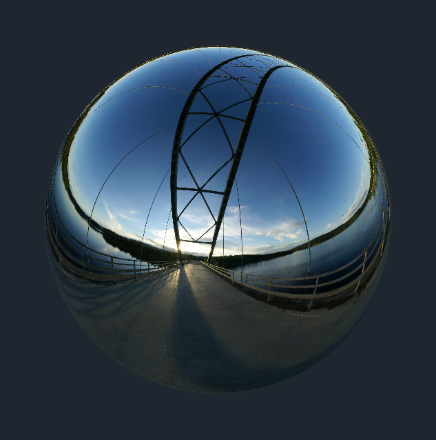
For a mirror, we normalize the outgoing direction from the surface toward the camera, reflect its negative around the surface normal, and sample the environment cubemap in the resulting direction. The cloth’s changing normals bend the reflected scene across its folds. The sphere produces a continuous curved reflection with a strong horizon and the tower structure from the supplied cubemap. This is environment-map reflection; the cloth and sphere do not reflect one another through secondary rays.
Implementation lessons and limitations
The clearest simulation comparisons come from resetting the scene and changing one parameter at a time. The stiffness/density equivalence provides a useful check on mass scaling, and recording more than one time separates transient motion from equilibrium. Extreme softness and zero damping expose persistent motion that a single late screenshot could otherwise conceal.
The self-collision method is a local particle approximation, and the one-pass stretch limiter is not an exact global constraint solver. The ordinary Phong shader also uses the mesh normal directly rather than implementing two-sided lighting; the initially vertical self-collision cloth is therefore displayed with the normal shader to keep its folds legible. Bump and displacement images make another useful distinction: shading detail is controlled by fragment sampling, while geometric detail is limited by vertex sampling.
Custom shader and extra credit
No additional custom material shader or extra-credit simulation feature is claimed. Custom.frag remains the starter normal-color example. The custom work shown here consists of the procedural color/height textures and controlled visual experiments.
Assignment references: Homework 4 and write-up rubric. Reproduction parameters: experiment manifest; measured time series: measurements directory.